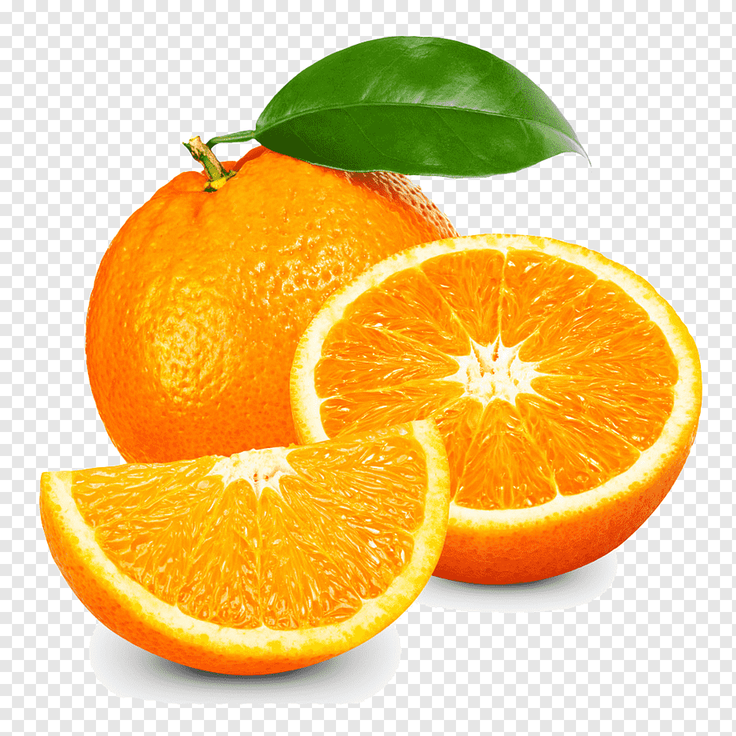

tentangbuah.com

Jeruk

Jeruk Jeruk adalah salah satu buah paling populer
sedunia. Buah ini tumbuh dari pohon jeruk Citrus x sinensis dan
tergolong ke dalam kelompok buah-buahan sitrus. Asal jeruk masih menjadi
misteri hingga kini, tetapi buah tersebut sudah mulai dibudidayakan di
Asia bagian selatan sejak ribuan tahun lalu. Sekarang, buah jeruk banyak
ditemukan di negara-negara hangat dan tropis. Merupakan sumber serat,
vitamin C, vitamin B1 dan folat, serta antioksidan kuat, jeruk memiliki
berbagai manfaat untuk kesehatan.
Jeruk adalah buah yang memiliki bentuk yang bulat dan kulit yang
berwarna oranye. Aroma yang khas dikeluarkan oleh jeruk pun sangat kuat
sehingga kita dapat dengan mudah menebak buah jeruk tanpa harus
melihatnya hanya dengan mencium aromanya. Buah jeruk ini memiliki
berbagai macam jenis ukuran yaitu, kecil, sedang, hingga besar.
Jeruk ini memiliki rasa yang asam namun ada juga yang manis. Jeruk ini
memiliki kadar air yang cukup banyak pada bulir-bulirnya. Saat Anda
menikmati jeruk, akan terasa bulir-bulir jeruk yang pecah dan
menghasilkan air yang cukup banyak. Memakan jeruk juga dapat untuk
menghilangkan rasa haus.
Berikut merupakan berbagai manfaat dari jeruk :
- Melawan radikal bebas
- Mengurangi risiko penyakit kanker
- Menjaga sistem kekebalan tubuh
- Membantu mencegah bayi lahir cacat
- Mencegah sembelit
- Menjaga kesehatan kulit
Daftar Harga
| Jenis Jeruk | Harga | |
|---|---|---|
| Per Kilo | Per Biji | |
| Jeruk Manis | 30.000 | 3.000 |
| Jeruk Bali | 50.000 | 5.000 |
| Jeruk Limau | 25.000 | 3.000 |
| Jeruk Yuzu | 75.000 | 7.500 |